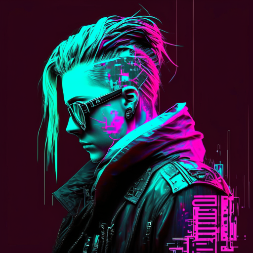

Cybersecurity student | CTF player | Hyprland lover | Digital forensics enthusiast
I am passionate about all things cybersecurity and am always eager to learn and explore new areas in the field. I enjoy participating in Capture The Flag (CTF) competitions, where I can challenge myself and improve my skills. I have a strong interest in digital forensics and love to dive deep into the investigation of cyber crimes.
My current focus is on mastering digital forensics techniques and enhancing my knowledge of network security. I am an advocate of open-source software and love customizing my Linux environment, particularly using Hyprland for a tailored and efficient workflow.
I am leading the development and management of the CTF Hunt 2024 platform, where participants can engage in various cybersecurity challenges to hone their skills. The platform features a wide range of CTF challenges designed to test and improve the participants' knowledge in different areas of cybersecurity, including penetration testing, digital forensics, cryptography, and more.
Join our Discord: https://discord.gg/jr6BuUfWPB
GitHub: github.com/